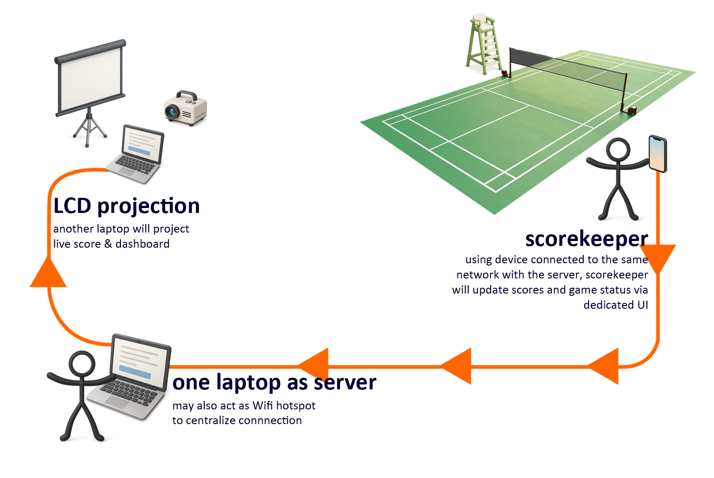
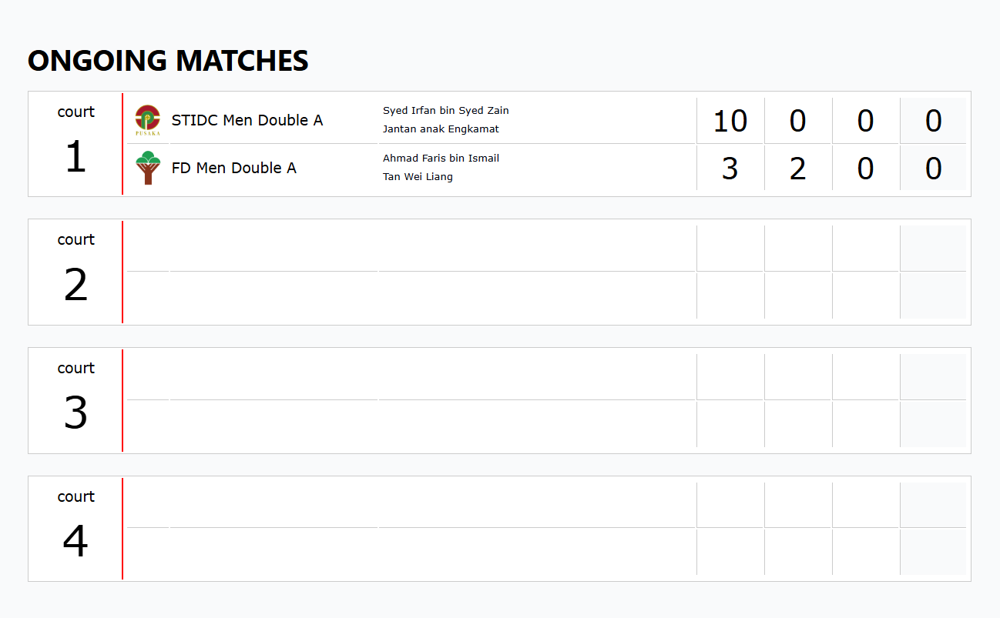
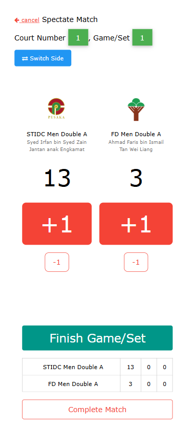
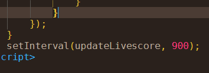

3 Oct 2026
In conjunction with International Day of Forests 2025, our company hosted a 2-day badminton tournament.
I am one of the committee members responsible for planning, preparing and executing the event.
As the only person with zero knowledge about badmintons (and partly because I am an IT guy), I was given the easy role - stay close with laptops and play some audio when asked to.
Although not in the original assignment, I pitched to the team that I could come up with some creative ways to display scores and information, live.
With just one week to prepare the prototype, I showed to them, the badminton live score display system.
I call it, badcourt.

The main & live dashboard, projected on the screen

This is where scorekeeper controls the scoring. Changes made here are instantly shown to the live dashboard.

The trick to achieve continuous update is simply this code below, embedded in the dashboard page. It runs every 0.9 second to make GET request to "/livescore/get", which will respond with JSON data containing information for each court observed.

For the server, we configured PHP-FPM (FastCGI Process Manager) behind NGINX to allow greater performance. For our purpose, this is good enough.
Here is the link to badcourt source code: https://github.com/mohdshahrim/badcourt
references
https://www.jayatiasa.net/badminton-tournament-2025-jth-clinches-second-runner-up-spot/
Mohamad Shahrim
author of The Laksamana